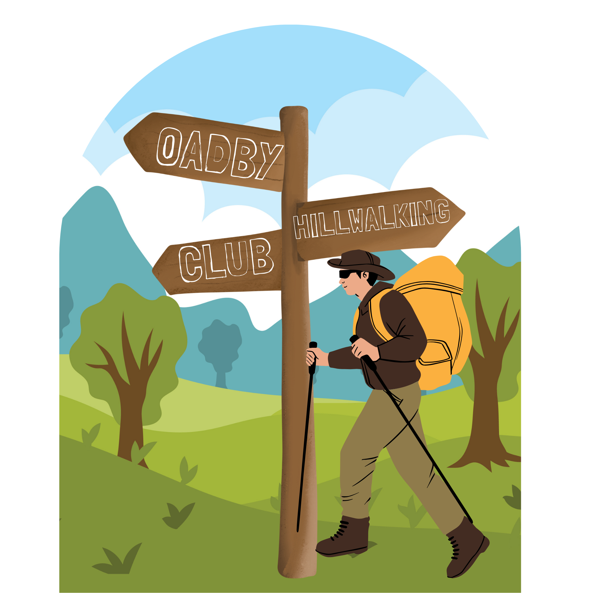

.png)
Oadby Hillwalking Club
Essential Information

Safety Information
It is required that members and guests carry a completed safety form and are suitably equipped. As a minimum this includes:
- • Stout walking boots
- • Waterproof coat and over trousers
- • Warm clothing and spare clothing
- • Appropriate rucksack
- • Food and drink for the day
Jeans and trainers/sandals are not suitable.
The safety form can be downloaded here:
Members are responsible for ensuring that their guests are acquainted with the terrain, healthy and capable of a full day’s hike.
A leader may decline to take a member or guest if he/she is of the opinion that the person is inadequately equipped, unfit or the terrain is too demanding.
“The club walk organisers are not qualified guides. You join them at your own risk and of your own free will. You are part of an autonomous group, responsible for your own safety and happy to accept the discretion and actions of any or all the participants on that organised walk or activity in the event of injury to you, the need to have you rescued or otherwise.”
Registered Assistance Dogs Only are allowed on club walks. Dogs (on a lead) may be taken on mid-month walks by prior agreement of the walk leader.
Insurance
Our Civil Liability insurance policy provides cover for legal liability under civil law to the general public for personal injury or damage to property. Full details of the policy are available upon request.
As required by law, the coach company carries third party insurance and its operating licence.